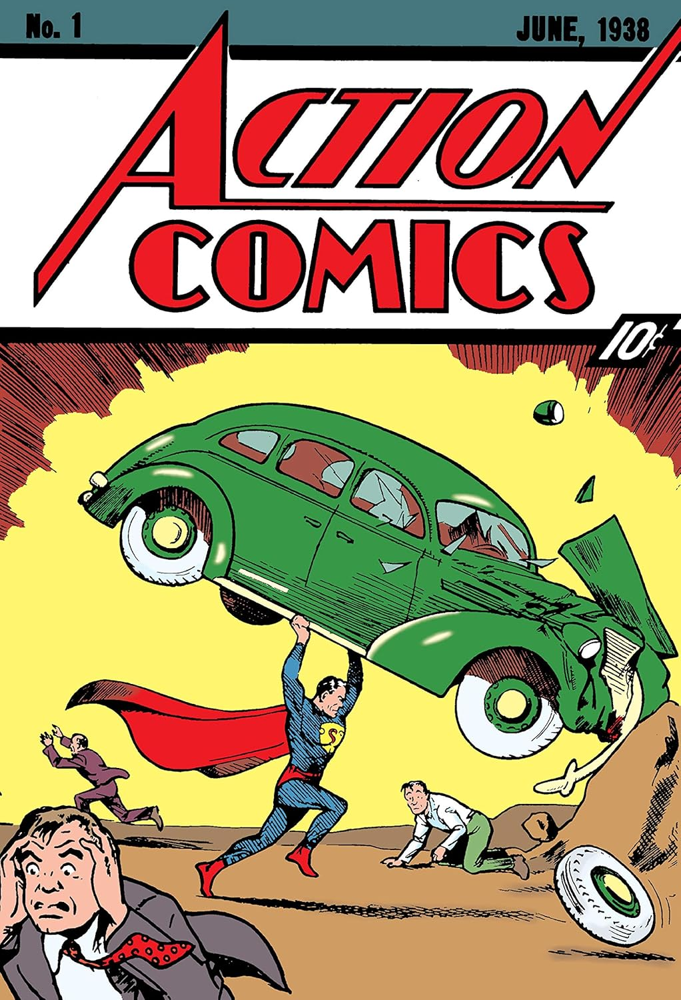
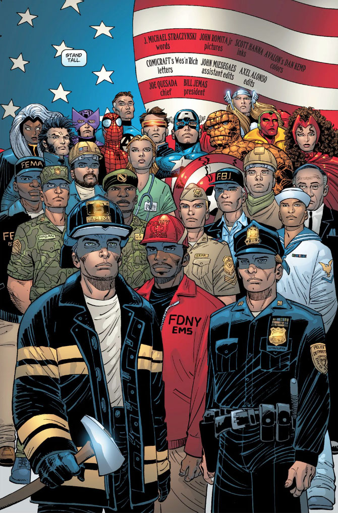

Los SuperHéroes en nuestras vidas
Los superhéroes han tenido un papel crucial en la cultura popular, representando ideales como la justicia y la valentía. A lo largo de la historia, estos han servido como símbolos de esperanza y resiliencia, inspirando a las personas a enfrentar desafíos con determinación.
En tiempos de crisis —guerras o desastres— los superhéroes reflejan la necesidad de figuras fuertes que defiendan a los vulnerables. Muestra de ello fueron la creación de Superman durante la Guerra Fría y del Capitán América en la Segunda Guerra Mundial.

Espejo de cada época
Los superhéroes son un reflejo de las preocupaciones sociales y políticas de cada época. Desde la lucha contra tiranías hasta la representación de diversidad e inclusión, sus historias abordan temas relevantes.
Estos personajes evolucionan junto con la sociedad, adaptándose para ser representativos de los valores y conflictos contemporáneos, permitiendo que la audiencia reflexione sobre los problemas del mundo real a través de aventuras fantásticas.

Todos podemos ser héroes
En la vida cotidiana, los superhéroes tienen un impacto emocional profundo, inspirando a las personas a superar adversidades y encontrar su propio poder interior.
Aunque son ficticios, los ideales que encarnan nos motivan a ser mejores, a luchar por lo correcto y a ayudar a los demás. Nos recuerdan que, aunque no tengamos superpoderes, todos podemos ser héroes en nuestras propias vidas.
With great power comes great responsibility. — Stan Lee

Sigue explorando
Hay mucho más por descubrir en el universo de los superhéroes